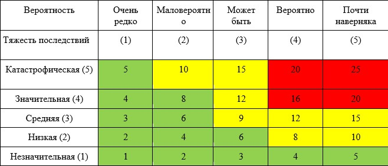
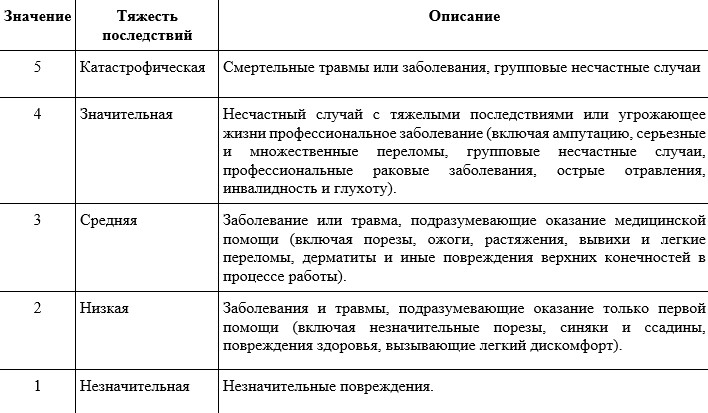
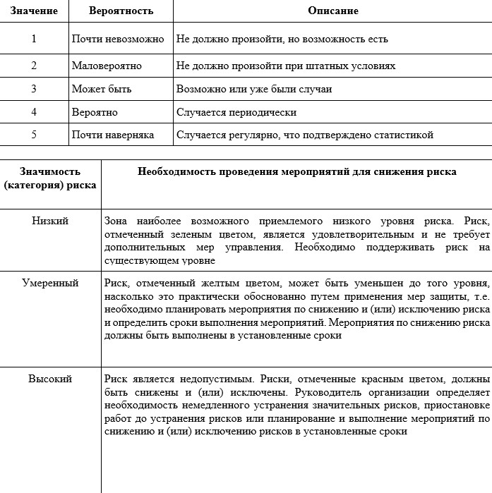

Как оценить уровни профессиональных рисков (п. 5 ПОТ)
Для обеспечения функционирования системы управления охраной труда работодателем должны проводиться мероприятия по управлению профессиональными рисками на рабочих местах, связанные с выявлением опасностей, оценкой и снижением уровней профессиональных рисков. (ст.218 ТК РФ). Разберем эти мероприятия подробнее, а также объясним, что такое матричный метод оценки рисков, который вы сможете применять в работе.

Какие опасности учитывает работодатель
Выявление опасностей осуществляется путем обнаружения, распознавания и описания опасностей, включая их источники, условия возникновения и потенциальные последствия при управлении профессиональными рисками.
Работодатель, исходя из специфики строительного производства и характеристик объекта, проводит оценку профессиональных рисков, связанных с опасностями.
Ниже в памятке собрали перечень опасностей, которые должен учитывать работодатель. Изучите памятку и используйте в работе.
Материал к уроку (PDF)
Какие опасности учитывает работодатель
PDF получен с исходной страницы. Поля для названия организации и других персональных данных оставлены пустыми.
Работодатель вправе выбрать метод оценки уровня профессиональных рисков или разработать собственный, исходя из специфики своей деятельности.
Как определить уровень профессионального риска
Рассмотрим матричный метод оценки риска, не требующий значительных временных и финансовых затрат, а также углубленного обучения использующих его специалистов
5 шагов
Шаг 1. Собрать информацию о состоянии охраны и условий труда на рабочих местах, включающую данные о:
- расположении рабочего места и/или места проведения работ;
- работниках, выполняющих работу, с информацией о молодежи, беременных женщинах, работников с ограниченными возможностями, подрядчиках, посетителях;
- оборудовании, материалах и сырье;
- ранее выявленных опасностях;
- принятых защитных мерах;
- зарегистрированных несчастных случаях и профессиональных заболеваниях;
- результатах специальной оценки условий труда;
- законодательных и иных требованиях, которые предъявляют к рабочим местам.
Шаг 2. Сформировать реестр опасностей по видам работ, рабочим местам, профессиям или структурным подразделениям в зависимости от потребностей работодателя и особенностей производственных процессов предприятия.
Шаг 3. Оценить риски от опасностей, которые выявили, оценить вероятности и степени тяжести возможных последствий. На этом этапе определите критерии степени тяжести и вероятности наступления негативного события.
Шаг 4. Разработать меры по устранению опасностей и снижению уровней профессиональных рисков:
- высокий уровень профессионального риска: принимают срочные меры по его снижению;
- умеренный уровень профессионального риска: формируют план мероприятий по его снижению;
- низкие или малозначимые уровни профессиональных рисков: не требуют дополнительных мероприятий, но нужно фиксировать действующие меры контроля, чтобы не допустить роста их уровня.
Меры по управлению и снижению уровней профессиональных рисков разрабатывают исходя из значимости выявленных рисков и эффективности защитных мер:
- устранение опасности в источнике. Например, отказ от опасной технологической операции, либо полная автоматизация опасной ручной операции;
- замена опасной работы менее опасной;
- реализация инженерных или технических методов ограничения интенсивности воздействия опасностей на работников;
- реализация административных методов ограничения времени воздействия опасностей на работников;
- использование средств индивидуальной защиты.
Шаг 5. Документировать процедуры оценки уровня профессиональных рисков и составлять реестр всех выявленных опасностей с указанием:
- результатов оценки уровня профессионального риска, связанного с каждой опасностью;
- мероприятий для снижения уровней высоких и умеренных профессиональных рисков и недопущения их повышения;
- действующих предупредительных и защитных мер.
Матрица метода оценки риска
Матрица метода оценки риска строится на соотношении вероятности причинения ущерба от выявленной опасности и тяжести последствий ущерба, где вероятность и тяжесть имеют свои весовые значения, а уровень риска рассчитывается путем перемножения баллов по показателям вероятности и тяжести по каждой идентифицированной опасности.



Рассмотрим применение таблиц на практике.
Пример
Оценка уровней профессиональных рисков, приведенных на картинке.
Первый шаг. Собрали информации о состоянии охраны и условий труда на рабочих местах.
Защитные меры в части защиты от падения с высоты не приняты. Отсутствуют ограждения. Страховочные привязи, страховочной сети в кадре не видно.
Второй шаг. Сформировали реестр опасностей по видам работ.
Реестр опасностей для монтажника по монтажу стальных и железобетонных конструкций:
- опасность падения с высоты;
- опасность разлетающихся частиц при использовании гайковерта.
Третий шаг. Оценили риски от выявленных опасностей.
Ввиду отсутствия средств защиты при работе на высоте и технологии монтажа конструкции можно оценить:
- вероятность причинения ущерба (в нашем случае падения): 3 – Может быть (Возможно или уже были случаи)
- оценка степени тяжести последствия: 5 – Катастрофическая (Смертельные травмы или заболевания, групповые несчастные случаи)
- уровень профессионального риска – 15, что говорит о том, что риск может быть уменьшен приемлемого уровня, т.е. необходимо планировать мероприятия по снижению и (или) исключению риска и определить сроки выполнения мероприятий.
Исходя из выбранного нами метода оценки уровня профессионального риска, который исчисляется по формуле: Риск = Вероятность * Тяжесть последствий.
Четвертый шаг. Разработали меры по устранению опасностей и снижению уровней профессиональных рисков:
- реализовать инженерные (технические) методы ограничения интенсивности воздействия опасностей на работников;
- реализовать меры по безопасному выполнению работ для исключения работ на высоте;
- реализовать административные методы ограничения времени воздействия опасностей на работников (например, таких как выдача наряда-допуска с указанием мер по безопасному выполнению работ);
- использование средств индивидуальной защиты.
Пятый шаг. Задокументировали процедуры оценки уровня профессиональных рисков с составлением реестра всех выявленных опасностей.
Таким образом мы выявили вероятности причинения ущерба от опасности и тяжести последствий ущерба. Чтобы избежать подобных нарушений перед началом строительного производства работодатель и представитель собственника эксплуатирующего объект должны составить акт-допуск для производства строительно-монтажных работ и наряд-допуск на производство. Именно об оформлении этих двух документов мы расскажем в следующем уроке.